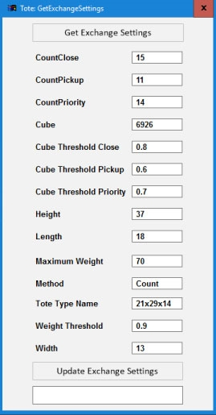

| Procedure ID | proc_verify_the_normal_tote_exchange_sequence_coordinated_by_wcs_v1 |
|---|---|
| Title | Verify The Normal Tote Exchange Sequence Coordinated By WCS |
| Procedure Type | diagnostic |
| Primary Role | L1_support |
| Support Safe | Yes |
| Validation Status | needs_sme_review |
| Merge Status | source_finalized |
Use this source-backed diagnostic procedure to verify that the documented normal tote exchange sequence occurs during operation: parcels are directed into a tote, the tote reaches a configured limit, the WCS signals the sorter PLC to stop diverting packages, an AGV retrieves the full tote, another AGV places an empty tote, and the WCS signals the sorter PLC to resume sortation.
Use when verifying whether normal WCS-coordinated tote exchange behavior matches the sequence described in the source during sorter operation.
Responsible role: L1_support
Instruction:
Observe sorter operation and confirm that parcels are being directed into a tote.
Expected result:
Parcels are actively being directed into a tote during normal sorter operation.
Stop or Escalate If:
Responsible role: L1_support
Instruction:
Check whether the tote has reached the customer-specified weight, number of parcels, or volume threshold, if that state is available from site indicators or operations context.
Expected result:
A tote limit condition is observable or inferable from available site indicators or context.
Screens / Images:

Stop or Escalate If:
Responsible role: L1_support
Instruction:
Verify that the WCS sends a message to the sorter PLC to stop diverting packages when the tote limit is reached.
Expected result:
Package diverting stops when the tote reaches the configured limit.
Stop or Escalate If:
Responsible role: L1_support
Instruction:
Verify that an AGV is triggered via the WCS controller to retrieve the full tote.
Expected result:
An AGV retrieves the full tote after diverting stops.
Screens / Images:
Stop or Escalate If:
Responsible role: L1_support
Instruction:
Verify that another AGV places an empty tote where the full tote was removed.
Expected result:
An empty tote is placed in the vacated position after the full tote is removed.
Stop or Escalate If:
Responsible role: L1_support
Instruction:
Verify that the WCS sends a message to the sorter PLC to resume sortation after the empty tote is in place.
Expected result:
Sortation resumes after the empty tote is placed.
Stop or Escalate If: